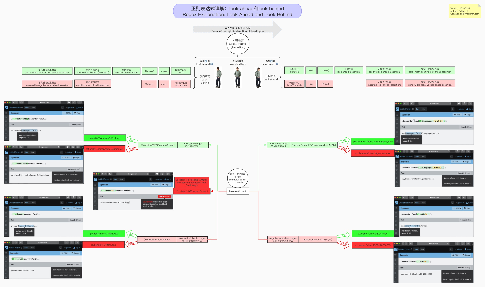
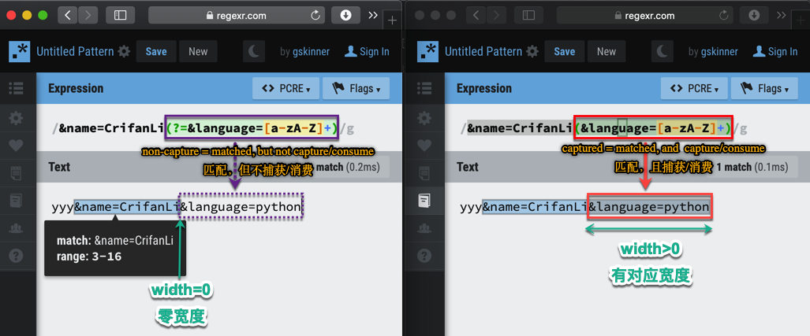

环视断言Look Around
正则中，有一部分的语法叫做：Look Around，下面详细解释如下：
- 在线浏览
- 如图
- 
下面再详细解释如下：
断言
- 叫法
- 英文：
assertion - 中文：
断言
- 英文：
- 含义：声称，判断，预言： 是 或 否=不是
- 是：
- 是什么（样的）
- 不是
- 不是什么（样的）
- 是：
- 正则表达中的 断言
- 叫法：
- 是 -》 匹配
- 不是 -》 不匹配
- 含义
- 广义：所有的正则表达式都是断言
- 都是 匹配 或 不匹配 对应规则
- 狭义：往往指的是 零宽断言
- 广义：所有的正则表达式都是断言
- 叫法：
零宽断言
zero-width assertion=零宽度断言=零宽断言- =
zero-length assertion=零长度断言 - 包括
- word level 单词级别
\b\B
- single line level 单行级别
^$
- multiple line 多行=whole string 整个字符串=whole document 整篇文档级别 level
\A\Z
look around(assertion)=环视断言- 包括
positive look ahead=look aheadnegative look aheadpositive look behind=look behindnegative look behind
- -》
zero-width positive look ahead assertionzero-width negative look ahead assertionzero-width positive look behind assertionzero-width negative look behind assertion
- 包括
- word level 单词级别
- =
非捕获匹配
- non-capture match=非捕获匹配
- 正则语法：(?:pattern)
- 含义：
- 去匹配match，但是不捕获capture，不消费consume 对应的字符串
-> 某种程度上说，此处的look around，也算是属于非捕获匹配
环视断言look around
look around：属于zero-width assertion- 含义
- 概述：
look around=环视断言- 包含
(?=xxx):(positive) look ahead (assertion)=正向肯定断言(?!xxx):negative look ahead (assertion)=正向否定断言(?<=xxx):(positive) look behind (assertion)=反向肯定断言(?<!xxx):negative look behind (assertion)=反向否定断言
- -> 加上
零宽前缀zero-width positive look ahead assertion=零宽正向肯定断言zero-width negative look ahead assertion=零宽正向否定断言zero-width positive look behind assertion=零宽反向肯定断言zero-width negative look behind assertion=零宽反向否定断言
- 包含
- 详解
look around=环视断言look ahead- 英文：
positive look aheadlook aheadzero-width positive look ahead assertion
- 中文：
- 一般译为：
零宽正向先行断言 - 其他叫法：
- (正向)前瞻性断言
- (正向)超前断言
- 正向预查
- 零宽断言
- 最佳翻译：
正向肯定查找正向肯定断言
- 一般译为：
- 英文：
negative look ahead- 英文：
negative look aheadzero-width negative look ahead assertion
- 中文：
- 一般译为：
零宽负向先行断言 - 其他叫法：
- 负向先行断言
- 否定超前断言
- 最佳翻译：
正向否定查找正向否定断言
- 一般译为：
- 英文：
look behind- 英文：
positive look behindlook behindzero-width positive look behind assertion
- 中文：
- 一般译为：
- (正向)后行断言
- (正向)后顾断言
零宽正向后行断言正回顾后发断言零宽正回顾后发断言
- 最佳翻译：
反向肯定查找反向肯定断言
- 一般译为：
- 英文：
negative look behind- 英文：
negative look behindzero-width negative look behind assertion
- 中文：
- 一般译为：
- 负向后行断言
零宽负向后行断言- 负回顾后发断言
零宽负回顾后发断言
- 最佳翻译：
反向否定查找反向否定断言
- 一般译为：
- 英文：
- 概述：
零宽度+非捕获 vs 普通有宽度+捕获
用下图来对比说明：
